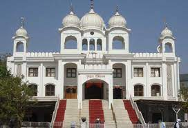
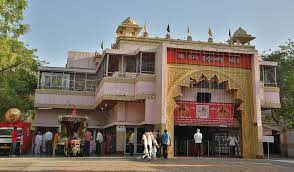
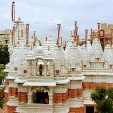

|  |
Nearest Metro Station: Thaltej Address: Sarkhej-Gandhinagar Hwy, Thaltej, Ahmedabad, Gujarat 380054, India Distance From Nearest Metro Station: 1.00 km Description: One of the famous and popular gurudwara in ahmedabad city. Its situated on SG Highway from where your can visit the places like Vaishnodevi temple,Tirupati balaji temple, Adalaj trimandir which are nearby. This gurudwara is famous for its lungar food distributed on every sunday. |
|  |
Nearest Metro Station: Sabarmati Railway Station Address: Cantonment Area, on Airport Road, Shahibaug, Ahmedabad-380004, Gujarat, India Distance From Nearest Metro Station: 5.90 km Description: The Shree Camp Hanuman Temple is one of the biggest Hanuman temples of India. It is situated in Ahmedabad Cantonment area in Shahibaug, Ahmedabad, Gujarat, India. This temple was established by Pandit Gajanan Prasad around 100 years ago. |
|  |
Nearest Metro Station: Jivraj Address: Jodhpur Village Satellite, Opp Star Bazaar Gali, Ahmedabad-380015, Gujarat, India Distance From Nearest Metro Station: 3.70 km Description: Prernatirth Jain Derasar is one of the most popular Jain Derasar(Temple) situated in Ahmedabad city. |